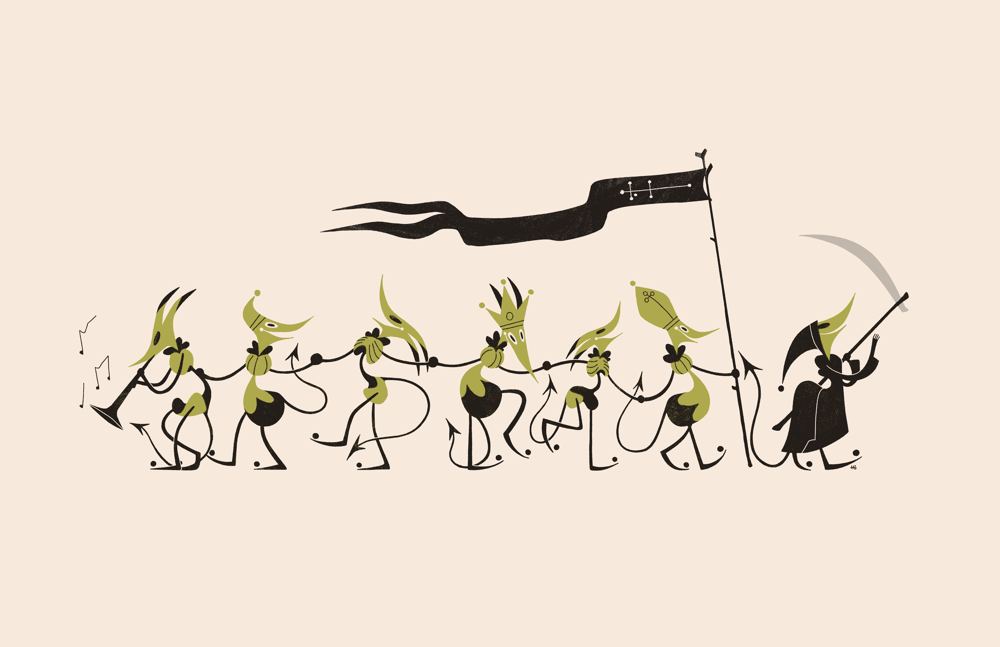

2025 02 13
HOLY! 26, Goblin Week, and Shop Launch
January was a packed month, with a lot of stuff to share with y'all! First up is the new zine, HOLY! 26:

Next up are the three pieces I made for Goblin Week (the last full week of January, for those who celebrate):

Eris 5

Dance 2

Dance 3
Finally — after two years of work, I'm happy to say that the Wormsong Oracle Deck is complete and up for sale on my brand new shop (along with a few other fun things)!

For now, the Helvetica Blanc Shop is shipping within the US only, since international shipping is currently a mess and really expensive. Hopefully I can find some solutions for international folks with time.
I told y'all it was a busy month!